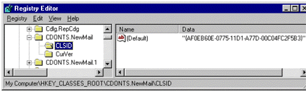
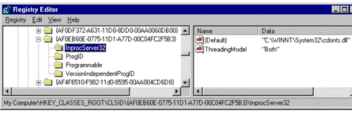

|
| ||
|
| ||
Michael D. Edwards
Software Design Engineer
Microsoft Corporation
April, 1999
For Part 1 of this series, click here.
For Part 2 of this series, click here.
Contents
Introduction
Sanity Checks
Assert your Assumptions
Lint Catchers
Error Logging
Defensive Coding Techniques
Internet Explorer 5 Conditional Comments
Verifying Objects and Properties
Slow loading pages
Know Your Script Features
Data Validation
Common ASP Mistakes
Syntax Differences Between VBScript and JScript
Storing Objects in ASP Application or Session Scope
For More Information
Performance
Server Availability
User Availability
Summary
Here is a useful technique for validating your logical assumptions as a matter of habit. As you write each line of code, simply consider how it might fail. Every time you catch yourself thinking "oh, that can never happen," simply enter that a priori knowledge directly into your code. When your code automatically asserts your assumptions, you can focus on the other possible sources of your error, confident that the problem isn't a simple oversight.
If you are using a programming language that allows for conditional inclusion, then you can put these assertions inside of a directive that includes them for testing purposes only. For example, JScript version 3.0 introduced a conditional compilation feature  (VBScript, unfortunately, has no comparable feature) that can be used to define an assertion function as shown:
(VBScript, unfortunately, has no comparable feature) that can be used to define an assertion function as shown:
@if (DEBUG)
// see http://msdn.microsoft.com/scripting/jscript/beta/doc/jsstmset.htm
// for info on defining a conditional variables (such as "DEBUG")
// condition asserts a condition your code assumes must-be-true
// message provides commentary on the meaning of a broken assumption
function DebugAssert(condition, message)
{
if (!condition)
{
var s = "DebugAssert: " + message;
// get the context information
s += " assert occurred in this function: " +
DebugAssert.caller.toString() +
" with the following " +
DebugAssert.caller.arguments.length +
" arguments: (";
for (var i = 0; i < DebugAssert.caller.arguments.length; i++)
{
s += (0 == i) ? "" : ", ";
s += DebugAssert.caller.arguments[i];
}
s += ")";
window.alert(s);
}
}
@end
The goal of conditional compilation is having the ability to indicate in your source code certain program statements for insertion or removal based upon the value of various global constants. This is an advantage in traditionally compiled applications (like Microsoft Word for example), because the compilation process can completely remove statements from the executable files that are shipped to the customer. However, Web page scripts are not compiled until the last second, meaning all program statements (including those that won't be compiled) must be sent to the client (or, for server-side scripting, loaded by the server), and will increase file sizes on the server. However, while a conditional compiliation feature for Web page scripts isn't as powerful as one for compiled programs, it can still allow you to avoid parsing and compiling scripts into executable code (which takes time and memory). Nevertheless, this may not be signficant, and so using global variables to determine the proper code path at execution time may be just as good.
One of the most basic sources of web page errors is improperly formed HTML or XML markup. Before you spend too much time tracking down why something isn't working, double check that your syntax is well formed. There are various lint-checking tools you can use for this. Sometimes the markup code will work in your primary browser, but not in other browsers. This is because different browsers have different tolerances for invalid markup. So while one browser may allow for a missing close tag, another might not. If you only test on your main browser, it will be a long while before you discover the problem, making it more difficult to track down.
You might start with this Yahoo search  .
.
Microsoft has an XML validator in the "Developer tools" area of the Tools page.
Error logging is the practice of recording all errors encountered by users on your Web site. This practice allows you to:
Conditional comments is a new and little known feature of Internet Explorer 5. It allows you to selectively include, or exclude, HTML and script on your page. One neat thing about this feature is that it can prevent the user from having to download irrelevant content. So, for example, if you use browser sniffing and script conditionals to replace a filtered text feature for Internet Explorer 4.x with an <IMG> for downlevel browsers, you can replace this with a conditional comment in Internet Explorer 5 that will skip the parsing of downlevel stuff. If it isn't going to be used, the image won't even be downloaded. While this new feature provides an obvious performance gain for Internet Explorer 5, it can also prevent script syntax errors from occurring on downlevel browsers because the Internet Explorer 5 code will be wrapped in an HTML comment. The DHMTL Dude wrote about this new feature in his "Conditional Comments, Radio Buttons" column last summer.
Never assume an object exists at the time you wish to reference it from script. Otherwise, you risk producing a run-time script error by referencing an object that has not been created. This can happen in a number of ways. For one thing, if you are coding cross-browser or cross-platform, there is a risk that the target's execution environment does not support the object you are referencing. Problems can also result from the asynchronous nature of loading Web pages: Internet Explorer can be loading the component referenced by an <OBJECT> element while it is also busy parsing and executing the <SCRIPT> elements that reference it. Unless you are absolutely certain of your target environment, your scripts should always assume an object might not be available.
There are a couple of ways you can avoid load-timing issues. One way is to use the window.ReadyState property, which is set to true after the entire page is completely loaded. You can also receive a notification when the page is loaded via the window.onload event. In fact, if you need a finer level of object readiness granularity than the entire document, the ReadyState property and the onload event can be utilized to determine when individual <OBJECT> (and other supported) elements are loaded. You can also use the onreadystatechange event to determine when a supported object changes state. Finally, as discussed in the second article, you can also get a notification when a dependent element fails to load via the onerror event.
You can combine the above with the disabled attribute of interactive DHTML elements in order to prevent users from clicking them before their dependencies are resolved. Similarly, use global variables to avoid executing certain blocks of code until any dependencies are resolved.
Another technique takes advantage of how non-existent objects in JScript contain the special null value, which is converted to false when evaluated in a Boolean expression. Hence you can do this to determine whether an object has been initialized before you access it:
if (window.parent)
{
// now you can safely execute expressions that access the parent object
}
When you check the existence of an object, you must first check for the existence of objects that are higher in the hierarchy. Knowing that JScript evaluates Boolean conditions in left-to-right order, you could write this:
// accessing window.parent.frames will produce a runtime error if
// window.parent isn't initialized
if (window.parent && window.parent.frames)
{
// now you can safely execute expressions that access window.parent.frames
}
Since JScript includes syntax that allows you to treat functions as objects, a similar technique can also be used to determine whether an object supports a particular method. This is useful because object capabilities often change with each new release; the capabilities may also differ due to cross-browser implementation differences. So, your code might try to access a method on an object that does not exist on some browsers, resulting in a run-time script error. You can avoid this by comparing the value of a method with null before invoking it:
if (window.print)
{
// this browser supports the window.print() method
}
Likewise, you can compare a property value to null, though you won't know whether the property is undefined or merely not initialized. That's because it is syntactically legal to access a non-existent property on an object. Doing so won't produce a script error, but will instead temporarily create a new member variable by that name, initialized with the value null. This is the basis of the so-called expando functionality of JScript, where you can dynamically add member variables to an object after it is created.
In VBScript you can't treat a function like an object. Thus, in VBScript, the above check for the existence of a window.print object would actually invoke the method, and the conditional test would be conducted on the method's return value! The version 5.0 VBScript engine does add the new function GetRef  , but since you can't add member variables to a VBScript object, attempting to get a reference to a non-existent object, method, or property will produce a run-time script error. On the other hand, VBScript is an Internet Explorer-only solution for client-side script, so you can eliminate some of the cross-browser differences from the problem.
, but since you can't add member variables to a VBScript object, attempting to get a reference to a non-existent object, method, or property will produce a run-time script error. On the other hand, VBScript is an Internet Explorer-only solution for client-side script, so you can eliminate some of the cross-browser differences from the problem.
Some would argue there is such a thing as coding "too" defensively. That is, coding defensively might actually hide bugs, making them harder to track down. But combining defensive coding practices with assertions can be a very effective practice: The assertions expose bugs under debug conditions, while the defensive coding protects the end-user. For example, in the some of the above examples for verifying objects and properties before use, it may be more appropriate to assert their existence in a debug version, and check their existence in the retail version.
The DHTML Dude wrote about the non-deterministic nature of page-loading in his September 22, 1998 "Asynchrony: Loved Your Performance" column.
The second chapter of Steve Maguire's Writing Solid Code, Microsoft Press, 1993, has an excellent discussion of when to assert. Steve's book is also referenced in this section of Hardcore Visual Basic discussing what to assert. 
Variable page load times is another thing that contributes to run-time script errors accessing uninitialized objects or variables. Your code might fail on your site's slowest days, because it takes longer than usual to initialize a dependent object, or to load the entire DHTML object model for the page. Unfortunately, slow-loading days might also be your most important days if the slowness is due to an unusually high number of page hits on your server.
This is manifested from a user perspective by trying to click interactive page elements while the page is still loading, and getting various whacko errors. I've done it, I'm sure you have too. Of course, the temptation is hard to fight, especially when the page is taking forever to load.
The same techniques discussed in the previous section are useful in avoiding script errors due to slow page loading.
Knowing your script features is simply a matter of knowing which configurations support the features you are considering employing on your pages. At the very least this can save you some testing and debugging time, and at best you'll make better and more timely design decisions for the features you require on the targets you need to support.
Every page of Microsoft's JScript documentation  is labeled by version in the top-right corner, indicating when the described feature was first available. The same is true for the VBScript documentation
is labeled by version in the top-right corner, indicating when the described feature was first available. The same is true for the VBScript documentation  .
The following table indicates when Internet Information Server (IIS) (for your server-side script) and Internet Explorer (for your client-side script) first hosted a particular script engine version.
.
The following table indicates when Internet Information Server (IIS) (for your server-side script) and Internet Explorer (for your client-side script) first hosted a particular script engine version.
Internet Information Server |
Internet Explorer (Win32 Versions) |
VBScript |
JScript |
| 3.0 | 1.0 | 1.0 | |
| 1.0 | 1.0 | 2.0 | |
| 3.0 | 2.0 | 1.0 | |
| 4.0 | 4.0 | 3.0 | 3.0 |
| 5.0 | 5.0 | 5.0 | 5.0 |
Some of the minor version updates to Internet Information Server and Internet Explorer have included a minor version update of the script engines. However, new features are added to Microsoft's script engines only in major version updates. So, from a feature standpoint, you only need to care about the major version updates (when the number to the left of the decimal point changes). Also, since a user or application can update the script engine that is installed on a user's computer, it is possible to encounter a browser with a later script engine version than indicated here (but never an earlier version).
Here is a similar table for Netscape Navigator:
Navigator Version |
JavaScript Version |
| 1.0 | 1.0 |
| 3.0 | 1.1 |
| 4.0 | 1.2 |
| 4.5 | 1.3 |
| 5.0 | 1.4 |
Netscape's "Core JavaScript Reference"  indicates the JavaScript version for which each feature was introduced. It is not yet possible to update the JavaScript engine used by a given Navigator version.
indicates the JavaScript version for which each feature was introduced. It is not yet possible to update the JavaScript engine used by a given Navigator version.
Data validation refers to the process of double-checking the validity of data input by the user before it is posted to the server or used in a database query. While this doesn't obviate the need for good error-handling practices when submitting client-side information to the server, you can gain a lot by validating data on the client before it is submitted to the server. For one, you'll be executing error-validation processor cycles on the client instead of the server, cutting down on your server load. And every time you can catch an error on the client, you've eliminated executing an erroneous server query and the work in returning an error to the client. Not to mention how cutting out an unnecessary round-trip to the server saves time for your user too. Plus, it can be a lot easier to flag the source of a potential error through specific, client-side data validation code than writing code to handle data type errors as reported by whatever of the various mechanisms you might be using on the server. For example, if you're using Active Data Objects (ADO) for a database query, you'll get ADO error 3421 ("The application is using a value of the wrong type for the current operation") if just one of the fields includes, say, an invalid floating point value. In this case, you'll still need to find the offending field. See what I mean? It's better to just validate the data to begin with.
There are multiple client-side points you could choose to validate data, depending upon the technology you are using to solicit the necessary user input. For example, a simple text input field in a Dynamic HTML FORM could use the onkeyup event to validate the data as it is being typed. Let's say you need to obtain an IP address from the user, which is a sequence of four numbers from 0 to 255, separated by periods:
<SCRIPT LANGUAGE="JavaScript"><!--
function AbortEntry(sMsg, eSrc)
{
window.alert(sMsg);
// set focus and highlight to the offending error
eSrc.focus();
eSrc.select();
}
function HandleKeyUp(eSrc)
{
// make sure they input a numeric value
// (in VBScript you'd use the IsNumeric() function)
var val = parseInt(eSrc.value);
if (isNaN(val))
{
return AbortEntry("Must be a number.", eSrc);
}
// make sure the value is in range
if (val < 0 || val > 255)
{
return AbortEntry("Value must be between 0 and 255.", eSrc);
}
}
//--></SCRIPT>
<FORM>
<INPUT TYPE="text" size=3 maxlength=3 ONKEYUP="HandleKeyUp(this)">.
<INPUT TYPE="text" size=3 maxlength=3 ONKEYUP="HandleKeyUp(this)">.
<INPUT TYPE="text" size=3 maxlength=3 ONKEYUP="HandleKeyUp(this)">.
<INPUT TYPE="text" size=3 maxlength=3 ONKEYUP="HandleKeyUp(this)">
</FORM>
Here is an example of the above code in action. Type in an IP address (any address will do--this is only a sample), and notice how the text validates on the fly.
Please enter a valid IP address
Did you notice how this code validates as each key is typed? The data validates before the user can tab or click away from the edit field. Since the error is prevented before the information is sent, data validation makes for a simpler user experience. A similar method could be implemented using the onchange event. In Visual Basic this event is fired for every change (much like the DHTML onkeyup event), however the DHTML version of the onchange event only fires when the field loses focus as the user tabs or clicks away.
If you have data dependencies between fields, using the onkeyup or onchange events is a good way to make sure data is valid before moving on. On the other hand, these techniques have more code maintenance issues compared with the efficient (from a coding perspective) global approach of validating everything on form submission. To do this you just need to handle the onsubmit event on the FORM element. If you are unable to validate the form data, you can cancel submission by returning false from your event handler function. Returning true allows the submit operation to continue (you'll need to indicate the function correctly, as shown in the FORM element MSDN documentation).
If you build your client-side page using Visual InterDev 6.0, you can use thisPage_onbeforeserverevent to validate data before the form is posted to the server. Or, if you are binding database records directly to fields on the client, you can use the onbeforeupdate event to validate the bound fields before the updated record is sent to the server (allowing you to abort the update if necessary).
An exact phrase search for "Data Validation" on MSDN Online yielded more than 50 hits, ranging from technology specific techniques to general overview articles on using data validation.
Carl Nolan wrote an interesting article about getting better data validation code reuse with JScript objects: "Get Instant Validation with JScript Procedures"  in the January 1999 issue of Microsoft Internet Developer (note this references is to the beginning of the article only).
in the January 1999 issue of Microsoft Internet Developer (note this references is to the beginning of the article only).
There is a great chapter about data validation in Writing Solid Code by Steve Maguire (Microsoft Press, 1993).
While you probably won't be victimized by obvious differences between these script languages, simple syntax differences can jump out and bite you where you're not looking. For example, VBScript is not case sensitive (for example, you can use either Request or request to refer to the ASP Request object). Jscript, on the other hand, is case sensitive, so when your scripts reference JScript keywords, you must type the keyword exactly as spelled in the reference documentation. The same goes for JScript variables and object, method, and property names. For example, this code to construct a JScript Date object will generate a "'date' is undefined" script error in Internet Explorer:
var currentTime = new date();
Case sensitivities can be especially troublesome if you are converting some VBScript code to JScript, or if you are switching over to JScript after having used VBScript for some time (and relaxed your case-sensitive typing habits).
The Setting Object Scope ASP topic talks about the dos and don'ts of using the built-in ASP Application and Session objects to override the default page scope of objects created by a web page. By default your scripts can only reference an object from the same page that created it. But, if you save a reference to the object in the Session object, then it can be retrieved from other pages on your Web that are visited by the same user who browsed the page that originally created the object. Similarly, if you save a reference in the Application object any user can retrieve it from any page. You can think of this as making an object global to a single user of your Web site, or making it global to all users.
However, this feature comes with its share of, shall we say, warning labels. In addition to those mentioned in the Setting Object Scope ASP topic, there are some others to consider. For one, if you try adding an Apartment threaded object to the Application object, then you will get an ASP error. This was a previously allowed (though not recommended) practice, but as of IIS version 4 it is no longer possible at all. I suspect this practice produced an exceptional number of issues handled in our developer support group. You are allowed to store Apartment threaded objects in Session scope, but that is likewise not recommended (also for performance reasons). In fact, the documentation warns that even if you use objects implemented in the both threaded model (which means the object is both free-threaded and apartment-threaded) you may introduce performance problems if a large number of concurrent users are hitting your site).
You may be wondering how you even figure out the threading model employed by a given component. Not to mention what the heck all those whacko threading models actually mean. Well, I'm not going to try and explain threading models here, since there are so many good existing resources. However, I can help you figure out which threading model is employed by a given component. If you can't find anything in the in the object's documentation, your last resort is to refer to the Windows registry. That means you have to run RegEdit.exe, open up the HKEY_CLASSES_ROOT tree in the left pane, and scroll down to the ProgID for the component you are interested in. The ProgID values for all the components that are registered on your computer are listed here in alphabetical order. Once you've found the desired ProgID, open up its subtree, click on its CLSID folder and note its CLSID value in the right pane. For example, if you wanted to know the threading model for the CDONTS.NewMail object you'd look up its ProgID value:

Figure 3. CLSID value for CDONTS.NewMail object is shown in Data field
Now that you know the CLSID value you can open up the CLSID subtree of HKEY_CLASSES_ROOT and scroll down to the CLSID for the desired component (they are listed in numerical order), open up its subtree, and click on the "InProcServer32" folder. The threading model is noted under the "ThreadingModel" name in the right pane. For example, in the case of CDO.NewMail, whose CLSID we figured out is "AF0EB60E-0775-11D1-A77D-00C04FC2FB3":

Figure 4. CDONTS.NewMail threading model is indicated as "Both"
Most of these articles are in the Server Technologies section of the Workshop.
"ASP Conventions" is a great all-around resource for ASP authoring conventions that was produced by the IIS Resource Kit Team (these folks are ASP experts).
Many of the problems that plague new ASP developers derive from false assumptions about the default scripting language on a page. The ASP documentation includes a "Working with Scripting Languages" topic that discusses this and other basic guidelines to help you skirt some common mistakes. Additionally, I think most new ASP developers will benefit from the entire "Using Scripting Languages" ASP topic. And if that doesn't keep you busy, another great Workshop article that all ASP developers should at least skim is the ASP Conventions topic that discusses a number of authoring conventions that can increase your productivity by helping you avoid making "dumb" mistakes.
If you are interested in learning more about threading models, start with this high-level description in this MSDN Library excerpt from the book "Professional Active Server Pages 2.0". If that sufficiently whets your appetite for punishment, you can pursue the "Selecting a Threading Model" topic in the IIS SDK.
The IIS SDK also has a Determining Component Scope topic that goes over issues to consider when deciding the proper scope (page, session, or application level availability) of objects referenced in your Web site scripts.
The Threading topic in George V. Reilly's "Developing Active Server Page Components with ATL" has a nice, concise explanation of threading models targeted towards developers of ASP components.
A huge chunk of the errors users encounter on Web sites are performance related, and are attributable to a stressed Web server (or database server) or to links in the chain between the user and the server. For example, a customer's Internet Service Provider (ISP) can be the culprit of a performance-related problem, due to temporary or systemic capacity problems in their link to the Internet backbone. Similarly, customers visiting your site through their corporate firewall may be limited by their proxy servers, or by the total available bandwidth on their corporate network. Thus, there are actually two aspects to performance issues: Server Availability and User Availability. Server availability is the most understood performance issue, dealing with metrics that measure how well your server is servicing page requests. But, your server isn't the only link in the "performance chain:" User availability refers to end-user problems that may occur despite the fact your server metrics seem to indicate all is well.
The area of performance related errors deserves a study of its own; for now, I'll simply provide pointers to the server performance tools, documentation and technical articles you can obtain from Microsoft to help you with server availability issues. Unfortunately, user availability issues remain a largely under-addressed problem area. Part of what makes user availability such a complex issue is that it's impossibile to predict the quality of the Internet connection between your server and a given user. Unless you control the long distance carrier, routers, local carrier, etc., you can't guarantee that the connection, once made, will be maintained. Or that the bandwidth will stay constant. In spite of all this, there remain things you can do to improve the user's experience.
"Server Performance and Scalability Killers". George V. Reilly goes over the top ten things culprits most often convicted of killing server performance.
"Maximizing the Performance of Your Active Server Pages". Nancy Cluts reports on a presentation by Philip Carmichael January 25-28, 1998, in Palm Springs. This article details, on a begginer level, how to write well-behaved ASP applications.
"15 ASP Tips to Improve Performance and Style". Nancy Cluts passes on some performance tidbits that the IIS team endowed on our own Web team - this occurred many Internet moons ago, in our former lives as the Sitebuilder Network Web team. But the hints are still relevant.
"Agility in Server Components". Neil Allain explains how to make sure you are squeezing the most performance possible from your Active Server Components. This is written to a C++ audience, but has some useful information for any component builder.
"IIS 4.0 Tuning Parameters for High-Volume Sites". An article from the Windows NT Server Performance Team targeting Web server system administrators who are familiar with administering Windows NT and IIS.
"For Starters: #13. Performance Tuning the Web Server". Mary Haggard's 14th "For Starters" column talks about using the IIS Resource Kit to trouble-shoot Web server performance.
"Navigating the Maze of Settings for Web Server Performance Optimization"  . Provided by Todd Wanke, Research and Development Manager for www.microsoft.com. This technical white paper on server performance in hosted on the Microsoft Backstage Web site. This site provides an insider's view of how Microsoft operates and maintains www.microsoft.com. The paper itself is Todd's most recent effort to explain how we have achieved the goal of 99.8% availability on www.microsoft.com. Among other things, Todd explains all the IIS settings that are in place on Microsoft's Web servers (and why they sometimes differ from the default values), the procedures used for monitoring server performance and testing new technology, and their recent availability goal breakthrough (which they achieved by implementing the Windows NT Load Balancing Service). The Backstage Archives
. Provided by Todd Wanke, Research and Development Manager for www.microsoft.com. This technical white paper on server performance in hosted on the Microsoft Backstage Web site. This site provides an insider's view of how Microsoft operates and maintains www.microsoft.com. The paper itself is Todd's most recent effort to explain how we have achieved the goal of 99.8% availability on www.microsoft.com. Among other things, Todd explains all the IIS settings that are in place on Microsoft's Web servers (and why they sometimes differ from the default values), the procedures used for monitoring server performance and testing new technology, and their recent availability goal breakthrough (which they achieved by implementing the Windows NT Load Balancing Service). The Backstage Archives  contain related material.
contain related material.
Tuning Internet Information Server Performance is by Mike Moore, who was development lead for Microsoft.com at the time he authored this paper in late 1997. He writes about how we learned how to affect server performance by tuning the IIS thread pool and the ASP request queue - and he makes an effort to help you figure out what these beasts are. Of course, the IIS settings used at Microsoft.com that are explained in Todd's paper supercede these older settings.
is by Mike Moore, who was development lead for Microsoft.com at the time he authored this paper in late 1997. He writes about how we learned how to affect server performance by tuning the IIS thread pool and the ASP request queue - and he makes an effort to help you figure out what these beasts are. Of course, the IIS settings used at Microsoft.com that are explained in Todd's paper supercede these older settings.
The IIS Resource Kit  is a comprehensive guide that is a must-see for anybody charged with rolling out and supporting IIS applications. In addition to providing performance tuning and optimization guidelines, tools are included that can help you test and debug performance issues as well as conduct capacity planning for your site. Two of these tools (and their documentation) are available from other download locations:
is a comprehensive guide that is a must-see for anybody charged with rolling out and supporting IIS applications. In addition to providing performance tuning and optimization guidelines, tools are included that can help you test and debug performance issues as well as conduct capacity planning for your site. Two of these tools (and their documentation) are available from other download locations:
Tom Moran wrote about another tool, called INetMonitor, in his MSDN Online Voices "Servin' It Up" column. This tool for load simulation is documented and available in the Microsoft Commercial Internet System Resource Kit  .
.
Finally, there is a relative newcomer to the Web server performance tools party: the Homer Web Stress Tool . Microsoft's Internal Tools Group (ITG) created this tool for internal Microsoft use only, but recently made it available for external use. While Homer is not an officially supported Microsoft product, if you spend a few minutes on the Homer Web Site
. Microsoft's Internal Tools Group (ITG) created this tool for internal Microsoft use only, but recently made it available for external use. While Homer is not an officially supported Microsoft product, if you spend a few minutes on the Homer Web Site  you'll no doubt agree it is the best documented Web stress tool Microsoft offers. And since real Web testers created it for their own use (testing www.microsoft.com), it does a very good job of increasing the productivity of those tasked with testing a large Web site for stress, performance, and required server capacity. I think it is interesting that Homer is the only Microsoft Web stress tool with a dedicated internal technical discussion email alias—note, the most useful threads of discussion are posted and searchable on the Homer Web site. This tool is a must-see.
you'll no doubt agree it is the best documented Web stress tool Microsoft offers. And since real Web testers created it for their own use (testing www.microsoft.com), it does a very good job of increasing the productivity of those tasked with testing a large Web site for stress, performance, and required server capacity. I think it is interesting that Homer is the only Microsoft Web stress tool with a dedicated internal technical discussion email alias—note, the most useful threads of discussion are posted and searchable on the Homer Web site. This tool is a must-see.
This issue comes into play when the browser has found the server for the requested page, and is negotiating to download everything in it. How does the term user availability apply to this scenario? Let's try an analogy: Have you ever spent time hanging around in the foyer to a busy executive's office, wondering when you'll actually get in to see her? You have a confirmed appointment, and you know she is there because you can see her moving through the cracks in the blinds on her office door. It's really important that you get some critical information from her, so you wait. And wait. Finally, just when you're really starting to get really angry, the door starts to open. You jump up and just manage to shove your foot in the doorway before it closes behind the person exiting. They look at you with surprise as somebody on the other side proceeds to slam the door on your foot. But you're not budging, because you have a confirmed appointment, and you're on a mission!
"Ma'am, I need to see you about…"
Wham!
"Ouch! Ma'am, excuse me, but I have been waiting a long time!"
Wham!
"Hey, I have an appointment!"
Wham!
"OK, OK", you exclaim, removing your obliterated foot, "Forget it!"
Such is the experience of the poor user who is successful in finding your Web server and the requested page, but not so successful in actually getting all the pieces of the page. So they wait—and wait—because, though the server indicates that the page is available, it is not immediately available to the user. The most aggravating scenarios occur when the user has stuck it out to the bitter end but is not rewarded with a successful page download. This is a personal pet peeve of mine, and I am on a mission to provide solutions. So… I'll be back.
If you have comments or feedback on the information I have provided here, I am anxious to hear from you. I'm especially interested in hearing from readers who have run into performance related problems that they wish to share. If I can help, I will. Just click the "Write Us" link below, and send me your thoughts. I promise, you'll hear from me.
Did you find this material useful? Gripes? Compliments? Suggestions for other articles? Write us!
© 1999 Microsoft Corporation. All rights reserved. Terms of use.